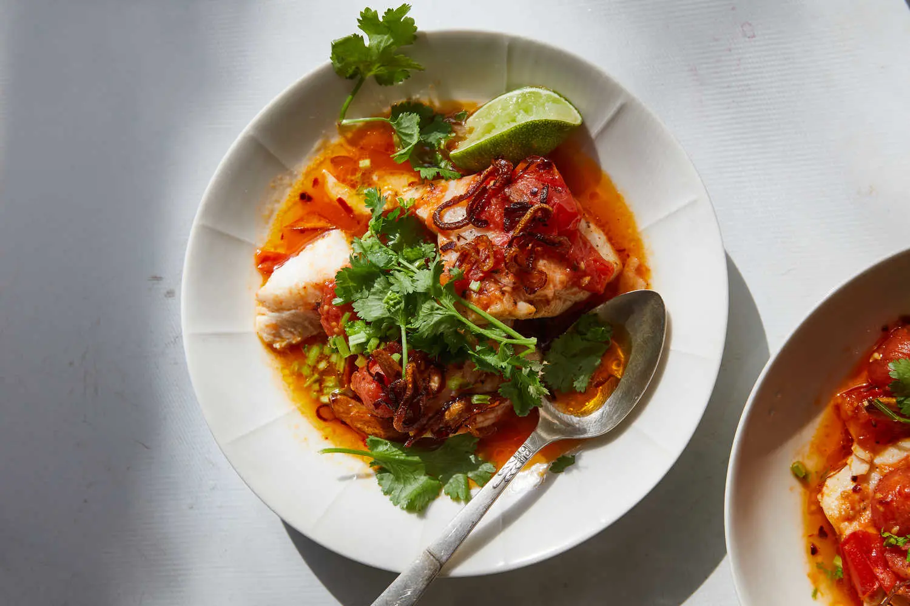

Tomato-Poached Fish with Chile Oil and Herbs

Poaching boneless, skinless fish fillets in a brothy sauce is a foolproof (and undeniably delicious) method for cooking fish.
¼ cupolive oil, plus more for drizzling4large garlic cloves, thinly sliced1medium shallot, thinly sliced into rings1 tspred-pepper flakes1 lbsmall sweet tomatoes, halved1 tspfish sauce (optional)1¼ lbfluke, halibut, or cod, cut into 4 equal pieces1 cupcilantro, leaves and tender stems½ cupmint, leaves and tender stems- Kosher salt and black pepper, to taste
- Limes, halved, for serving
Heat ¼ cup olive oil in a large skillet (use one with a lid) over medium-high. Add garlic and shallots and cook, swirling the skillet constantly until they start to toast and turn light golden brown, 2 minutes or so. Add red-pepper flakes and swirl to toast for a few seconds. Remove from heat and transfer all but 1 tablespoon of the chile oil to a small bowl.
Add tomatoes to the skillet and season with salt and pepper. Cook, tossing occasionally, until they burst and start to become saucy and jammy, 5 to 8 minutes. Add fish sauce, if using, and 1½ cups water, swirling to release any of the bits stuck on the bottom of the skillet.
Cook until the sauce is slightly thickened but still nice and brothy, 3 to 5 minutes. Season with salt and pepper.
Season the fish with salt and pepper and gently lay the pieces in the brothy tomatoes. Cover the skillet and cook until the fish is opaque and just cooked through, 4 to 6 minutes (slightly longer for a thicker piece of fish, like halibut).
To serve, transfer fish and brothy tomatoes to a large shallow bowl or divide among four bowls. Drizzle with reserved chile oil, more olive oil and the crispy shallots and garlic. Top with cilantro and mint, and serve with limes for squeezing over the top. Serve with rice, tortillas, or bread/toast, if you like.